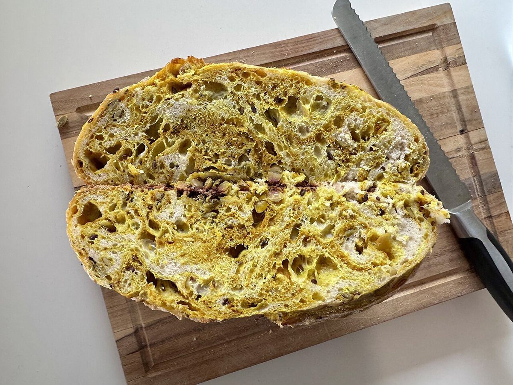

CH4
店のこと設定画面
お店について確認できているのは、所在地とInstagramのアカウントだけです。
確認できていること
- 店名は「BROWN BAKERY」、業種はベーカリー
- 所在地は富山県富山市太郎丸本町4丁目3-2(〒939-8272)
- Instagramのアカウントは @brown._.bakery
- 電話番号はなし。連絡はInstagramから
- 営業時間・定休日・メニュー・価格・ご予約・駐車場は準備中

制作側の連想
色の帯で、屋号を読んでみる
ページ上部とフッターに並ぶ茶色の帯は、屋号の「BROWN」から連想した飾りです。お店の看板やロゴの色を示すものではありません。パンの断面や焼き色の写真も、茶色のイメージに合わせて選んだフリー素材で、お店の商品ではありません。
